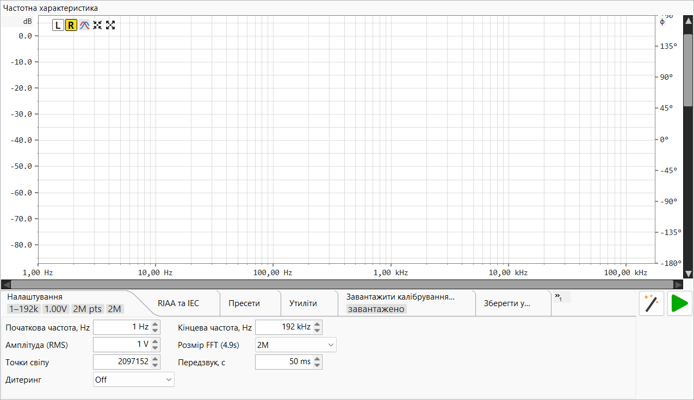

На цій сторінці описано елементи керування аналізатором частотної характеристики. Про принцип вимірювання — попередньо відрендерений логарифмічний свіп, деконволюція якого з відтвореним еталоном дає змогу отримати амплітуду та фазу по всій смузі за один прохід — читайте в Теорії роботи ▸ Частотна характеристика та короткому описі логарифмічного свіпу (Farina).
Частотна характеристика розташована на окремій вкладці верхнього рівня (поряд із комбінованою вкладкою Генератор / Осцилограф / FFT). Вона відтворює один свіп синусоїди на вихідному пристрої, захоплює сигнал повернення на вході та будує виміряну амплітуду (і необов'язкову фазу) досліджуваного пристрою залежно від частоти — з необов'язковим накладенням опорної кривої RIAA / IEC і кривою порівняння «виміряне мінус еталон» для роботи з фонокоректорами та фільтрами.

.frc / CSV, щоб відняти відому характеристику інтерфейсу від вимірювання. Вкладка завантаження калібрування.Рядок кнопок розташований над графіком.
| Кнопка | Дія |
|---|---|
| L (блакитна) | Показати амплітуду лівого каналу. Взаємовиключна з R — вибір однієї приховує іншу. |
| R (жовта) | Показати амплітуду правого каналу. |
| Phase | Показати / приховати криву фази та праву вісь ±180°. |
| Auto-setup | Підібрати вертикальне (амплітудне) вікно за видимою кривою, залишаючи невеликий запас вище найвищої точки. Діапазон частот залишається незмінним. |
| Maximize | Скинути до вигляду за замовчуванням — повний діапазон частот (від 1 Гц до частки Найквіста) і +20 … −150 дБ по вертикалі. |
| Play (зелена) | Запустити вимірювальний свіп; під час виконання підказка змінюється на «стоп» і з'являється діалог прогресу (дивіться Проведення вимірювання). |
Над графіком — колесо: панорамування по осі амплітуди (вертикальна); Shift+колесо: панорамування по осі частоти (горизонтальна); Ctrl+колесо: масштабування осі амплітуди (колесо вгору = збільшення); Ctrl+Shift+колесо: масштабування осі частоти (колесо вгору = збільшення). Обидва масштабування прив'язані до курсора — значення (дБ або частота) під покажчиком залишається фіксованим, поки навколо нього змінюється масштаб. Це та сама угода, що застосовується у видах осцилографа та FFT. Кожна смуга прокрутки панорамує лише одну вісь — ніколи не масштабує — а її повзунок масштабується видом, тому відстежує збільшення (збільшується / зменшується під час масштабування). Натисніть порожню доріжку для переходу до покажчика або утримуйте кнопку для безперервного переходу до повзунка.
Переміщення покажчика всередині графіка малює пунктирний хрест і плаваюче
віконце, що показує частоту під курсором (обмежену часткою Найквіста), амплітуду (дБ) на висоті курсора по лівій осі (y = …), амплітуду кривих L / R у дБ,
фазу в
градусах, якщо крива фази відображається, і різницю Δ порівняння, якщо увімкнено режим порівняння. Перехрестя зникає, коли покажчик виходить за межі графіка.
Панель налаштувань містить сім вкладок. Як і в інших місцях, панель показує символ переповнення », якщо вкладок більше, ніж вміщується. Вкладки «Параметри», «RIAA», «Калібрування» та «Пресети» відображають плитки з ключовими значеннями в згорнутому стані (вкладки «Утиліти», «Зберегти» та «Завантажити» — ні); наведіть курсор на плитку, щоб побачити підказку з описом значення.
| Елемент керування | Примітки |
|---|---|
| Початкова частота, Гц | Нижня межа свіпу. ≥ 1 Гц. |
| Кінцева частота, Гц | Верхня межа свіпу, до частки Найквіста. |
| Амплітуда (RMS) | Рівень збудження, що подається на DAC, у вольтах RMS відповідно до калібрування DAC; підказка перемикає відображення в дБВ. Приймає µV / mV / V / дБВ. |
| FFT size (Ds) | Довжина аналізу деконволюції, степінь двійки від 64k до 16M. Більше значення дає вищу роздільність за частотою та кращу фільтрацію шуму ціною тривалішого свіпу; мітка показує отриману тривалість свіпу. |
| Кількість точок свіпу | Кількість частотних точок, що генеруються для свіпу (від 8192 до 10M). Колесо перемикає степеневі пресети плюс запис «Найквіст/2», похідний від частоти дискретизації. |
| Зачікування, с | Час мовчання / стабілізації перед власне свіпом, щоб ланцюг вийшов на усталений режим до початку вимірювання. |
| Дітер | Глибина дітеру, що застосовується до згенерованого свіпу: Off або 1–31 біт — розкореляція помилки квантування відтворюваного сигналу. |

| Елемент керування | Примітки |
|---|---|
| Показати криву RIAA | Накласти еталон RIAA, вирівняний на 1 кГц. Цей перемикач вмикає три наведені нижче елементи керування. |
| Зворотня RIAA | Перемикання еталону між кривою запису (кодування) та відтворення (декодування) — оберіть ту, що відповідає вашому пристрою. |
| Поправка IEC | Додати субзвуковий фільтр верхніх частот IEC (~20 Гц) до еталону. |
| Порівняння (виміряне − еталон) | Побудувати згладжену різницю між вимірюванням і еталоном RIAA навколо нульової лінії 0 дБ, і автоматично масштабувати приблизно до 2 Гц – 25 кГц при ±2 дБ. Потребує наявного вимірювання. Блимаючий банер вказує активний еталон. |

Збереження та відновлення повних конфігурацій Параметри + RIAA.
| Елемент керування | Примітки |
|---|---|
| Поле імені | Введіть нове ім'я пресету або оберіть наявне. |
| Зберегти | Зберегти поточні параметри свіпу + RIAA під цим ім'ям; недоступно, якщо поточні налаштування вже збігаються з вибраним пресетом. |
| Завантажити | Застосувати вибраний пресет до активної панелі. |
| Видалити | Видалити вибраний пресет (із підтвердженням). |

| Кнопка | Дія |
|---|---|
| Знімок екрана | Зберегти або скопіювати зображення графіка частотної характеристики. |
| Calibrate DAC full-scale | Помічник калібрування DAC на еталонному рівні (1 кГц / 1 В RMS). |
| Calibrate ADC full-scale | Помічник калібрування ADC на еталонному рівні (вимірює еталон 1 кГц на вході). |

Список рядків калібрування. Кожен завантажений файл .frc / CSV із позначкою Active де-вбудовується (віднімається) від вимірювання, тож графік показує досліджуваний пристрій із вилученою відомою характеристикою інтерфейсу.
| Елемент керування рядка | Примітки |
|---|---|
| Шлях | Завантажений файл або «Калібрування не завантажено». |
| Active | Увімкнути / відкласти корекцію цього файлу без вивантаження — невідмічені рядки залишаються у списку для повторного використання одним кліком. |
| Load | Кнопка відкриття файлу — оберіть файл корекції .frc або CSV
для цього рядка. |
| Clear (×) | Вивантажити файл цього рядка (прапорець Active зберігається). |
| Add (+) | Додати ще один рядок для каскадування другої корекції. |
| Remove (−) | Видалити цей рядок. |

Зберегти поточне вимірювання як стерео CSV (частота, амплітуда L/R у дБ, фаза L/R у градусах). Кнопка «Зберегти» завжди запитує шлях із попередньо заповненим іменем freqresp_….frc з міткою часу.
Збереження без вимірювання виводить повідомлення «спочатку виконайте свіп».
Автоперезавантаження: якщо збережений файл вже завантажено як рядок калібрування на панелі FFT або на цій панелі Частотна характеристика (дивіться Завантажити калібрування…), цей рядок автоматично перечитується з диска в момент збереження — тож повторне вимірювання та перезапис калібрування набирають чинності негайно, без потреби шукати файл знову.

Завантажити раніше збережений стерео CSV назад у графік. Завантажений файл вважається вже відкоригованим (повторне калібрування не виконується), а банер без мигання показує його шлях у верхньому правому куті графіка.
Натисніть Play, щоб запустити свіп. Захоплення та відтворення генератора перехоплюються на час виконання, модальний діалог прогресу показує живий вимірювач RMS-у-часі, а графік амплітуди (і фази) оновлюється після завершення деконволюції. Загальний час — це зачікування плюс тривалість свіпу, визначена розміром FFT та частотою дискретизації. Оскільки еталоном є точно той попередньо відрендерений свіп, що відтворювався, результат є справжньою передавальною функцією пристрою, а не оцінкою — дивіться Теорія ▸ Частотна характеристика.